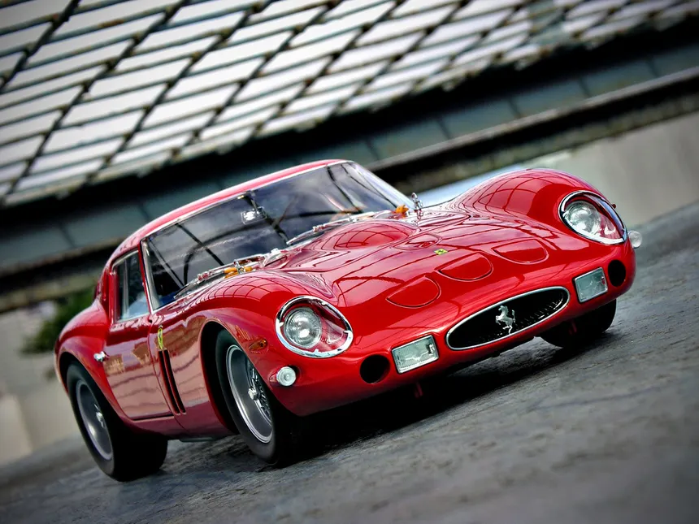
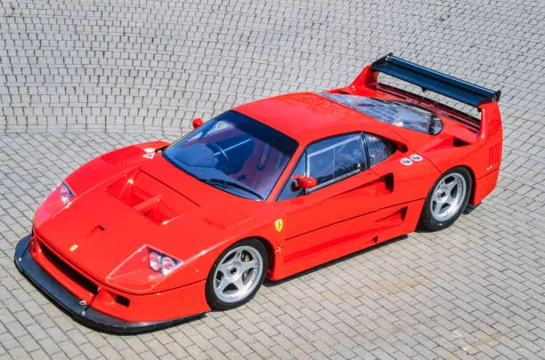
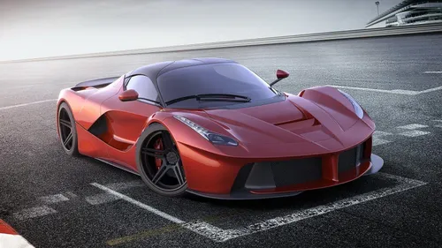

Una selezione di alcuni dei modelli più conosciuti
nella storia della Ferrari.
Le automobili Ferrari
Nel corso della sua storia Ferrari ha prodotto
numerose automobili sportive e ad alte prestazioni.
I diversi modelli Ferrari rappresentano l'evoluzione
del design, della tecnologia e delle prestazioni
dell'azienda italiana.
Alcune Ferrari sono state progettate principalmente
per le competizioni, mentre altre sono state create
per essere utilizzate su strada.
Tra i modelli più conosciuti possiamo trovare
automobili come la
250 GTO,
la F40 e la
LaFerrari.
Ferrari 250 GTO

Ferrari 250 GTO
La Ferrari 250 GTO è una delle
automobili più conosciute nella storia del marchio.
Il modello appartiene alla famiglia 250 e fu
sviluppato anche con un forte legame con il mondo
delle competizioni automobilistiche.
Il suo design è caratterizzato da una carrozzeria
sportiva e da una particolare attenzione
all'aerodinamica.
La 250 GTO è diventata nel tempo una delle
automobili più celebri associate alla storia Ferrari.
Anno di presentazione:
Motore: V12
Categoria: automobile sportiva da competizione
Marchio: Ferrari
Scopri di più sulla Ferrari 250 GTO
La 250 GTO rappresenta una parte importante
della tradizione sportiva Ferrari.
Ferrari F40
La Ferrari F40 è una delle
supercar più famose prodotte dalla casa italiana.
La F40 fu presentata alla fine degli anni Ottanta
ed è stata progettata con una forte attenzione
alle prestazioni e alla riduzione del peso.

Ferrari F40
La carrozzeria presenta un design molto particolare,
con grandi prese d'aria e un grande alettone posteriore.
La F40 utilizza un motore
V8 biturbo e rappresenta
una delle automobili più importanti della storia
delle supercar Ferrari.
La F40 è anche ricordata come l'ultima Ferrari
sviluppata durante la vita di Enzo Ferrari.
Anno di presentazione:
Motore: V8 biturbo
Categoria: supercar
Design orientato alle prestazioni
Scopri di più sulla Ferrari F40
La F40 è famosa per il suo design,
il motore V8 biturbo e la sua filosofia
orientata alle prestazioni.
LaFerrari
La LaFerrari è una supercar
ad alte prestazioni presentata da Ferrari
nel XXI secolo.
Il modello rappresenta l'utilizzo di tecnologie
moderne sviluppate anche grazie all'esperienza
maturata nelle competizioni automobilistiche.

LaFerrari
LaFerrari utilizza un sistema propulsivo
ibrido che combina un motore
a combustione con un sistema elettrico.
Il progetto combina
prestazioni elevate,
aerodinamica e tecnologie derivate dal mondo
delle competizioni.
Anno di presentazione:
Motore: V12
Sistema ibrido
Categoria: supercar
Scopri di più sulla LaFerrari
LaFerrari rappresenta l'utilizzo di tecnologie
moderne e ibride nel mondo delle supercar.
Altri modelli importanti
Ferrari ha prodotto molti altri modelli durante
la sua storia.
Ferrari Enzo -
una supercar dedicata a Enzo Ferrari.
Ferrari 458 Italia -
una sportiva con motore V8.
Ferrari 488 GTB -
una sportiva con motore V8 biturbo.
Ferrari SF90 Stradale -
una Ferrari con tecnologia ibrida.
Ferrari 296 GTB -
una sportiva con tecnologia ibrida.
Confronto tra alcuni modelli
Modello
Anno
Motore
Tipo
250 GTO
1962
V12
Sportiva
F40
1987
V8 Biturbo
Supercar
LaFerrari
2013
V12 + Ibrido
Supercar
L'evoluzione dei modelli Ferrari
I modelli Ferrari mostrano come l'azienda abbia
sviluppato nuove soluzioni nel corso degli anni.
Le prime automobili erano fortemente legate
alle competizioni automobilistiche.
Successivamente Ferrari ha introdotto nuove
tecnologie, nuovi materiali e sistemi elettronici
sempre più avanzati.
Nei modelli moderni sono presenti anche tecnologie
ibride che permettono di combinare un motore
tradizionale con uno o più sistemi elettrici.
Tre generazioni Ferrari
Possiamo osservare l'evoluzione della Ferrari
confrontando tre modelli molto diversi tra loro:
250 GTO -
rappresenta la tradizione sportiva
degli anni Sessanta.
F40 -
rappresenta la filosofia delle supercar
degli anni Ottanta.
LaFerrari -
rappresenta l'utilizzo di tecnologie
moderne e ibride.
Questi modelli mostrano come il design e la tecnologia
Ferrari siano cambiati nel corso del tempo,
mantenendo comunque un forte legame con le prestazioni.
La filosofia Ferrari
"Le Ferrari rappresentano una combinazione
di design, prestazioni, tecnologia e passione."
Il futuro delle automobili Ferrari
Lo sviluppo dei nuovi modelli Ferrari continua
a concentrarsi su prestazioni, tecnologia,
aerodinamica e innovazione.
La ricerca di nuove soluzioni permette all'azienda
di sviluppare automobili sempre più moderne,
mantenendo il legame con la tradizione sportiva.